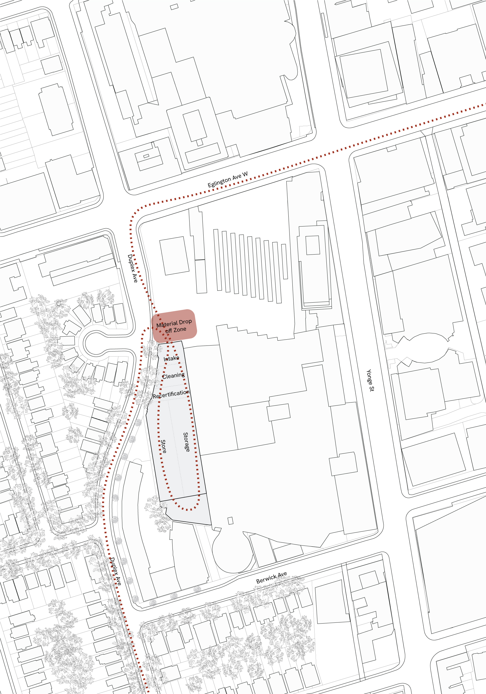

<!-- =====================================================
     RETURN YOUR MATERIALS
     ===================================================== -->

<section id="return-materials" class="return-materials-section">

  <div class="return-top-grid">

    <!-- LEFT SIDE -->
    <div class="return-top-left">

      <div
        id="return-materials-title"
        class="hero-title return-section-title"
      >
        RETURN YOUR MATERIALS
      </div>

      <div class="return-project-label">
        Proposed Facility — Thesis Design
      </div>

      <div class="return-siteplan-wrap">

        

      </div>

    </div>


    <!-- RIGHT SIDE -->
    <div class="return-top-right">

      <div class="return-body">
        Orbit Materials proposes a pickup and buy-back service
        for reusable construction materials identified through
        the platform.
      </div>

      <div class="return-body">
        Once a facade has been analyzed, users could request a
        collection through Orbit. Materials would be evaluated
        based on type, condition, and reuse potential, with a
        value assigned accordingly. In many cases, this could
        offset — or be lower than — the cost of sending the same
        materials to landfill.
      </div>

      <div class="return-body">
        Instead of paying disposal fees, materials would be
        redirected into a controlled reuse stream. Collected
        elements would be transported to the proposed Orbit
        depot, where they would be sorted, cleaned and, where
        required, recertified before being reintroduced into
        new construction projects.
      </div>

      <div class="return-body">
        This process reframes removal as recovery, creating a
        straightforward pathway for reducing waste, lowering
        disposal costs, and supporting a circular construction
        system.
      </div>

      <div class="return-caption">
        Material Flow Through Orbit Depot
        <br>
        Collection → Intake → Processing → Storage → Redistribution
      </div>

    </div>

  </div>

</section>
